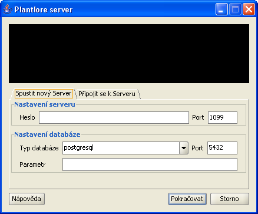

Aby se mohli k Vaší databázi připojovat i jiní uživatelé z počítačů v síti, musí být spuštěn Plantlore Server. Server zprostředkovává připojení vzdáleným klientům a dohlíží na dodržování předepsaného počtu klientů. Standardně se z jednoho počítače (z jedné IP adresy) smí přihlásit nejvýše tři klienti a maximální celkový počet současně připojených uživatelů je omezen na 32.
Nastavení serveru lze provést na záložce Spustit nový server.

Server lze spustit pouze na lokálním počítači. Jako správce serveru máte možnost nastavit následující parametry:
| Nastavení serveru | |
|---|---|
| Parametr | Význam |
| Heslo | Po spuštění je možné server administrovat i ze vzdáleného počítače. Aby k němu neměly přístup nepovolané osoby, je možné nastavit heslo, kterým bude server chráněn. Kdokoli se bude chtít k serveru připojit za účelem administrace, bude se muset tímto heslem prokázat. |
| Port | Port určuje, kde bude server naslouchat, aby se k němu mohli připojovat vzdálení klienti. Port je číslo v rozsahu 0 až 65.535, přičemž je běžné, že servery využívají porty vyšší než 1.024, neboť nižší porty bývají rezervovány pro známé služby (FTP, HTTP, Telnet, ...). Porty nelze sdílet - musíte se ujistit, že na zvolený port již některá jiná aplikace nepoužívá. Standardní port je 1099. |
| Nastavení databázového stroje | |
| Parametr | Význam |
| Typ DB | Existuje několik databázových strojů (database engine), které umožňují snadnou práci s databázemi, tabulkami, uživateli, dotazy a daty. Každý databázový stroj může obsahovat několik různě pojmenovaných databází s různou strukturou a s různým obsahem. Mezi nejznámější databázové stroje bezesporu patří Oracle, MSSQL, MySQL, Postgre a Firebird. Plantlore podporuje práci s různými databázovými stroji, ale je nutné přesně specifikovat, o který se jedná, aby s ním mohl bezchybně komunikovat. Plantlore je standardně dodáván s Postgre. Aktuálně podporované DB stroje jsou sepsány v rozbalovací nabídce, ale je možné specifikovat i jiný. |
| Port DB | Databázové stroje umožňují připojení pouze přes tzv. port. Každý databázový stroj má tento port jiný a navíc jej lze snadno změnit. Aby Plantlore Server věděl, kde má databázový stroj kontaktovat, musí znát port, na kterém stroj naslouchá. Port je číslo v rozsahu 0 až 65.535, přičemž je běžné, že databázové stroje využívají porty v rozsahu 1.024 až 10.000. Kupříkladu standardní port databázového stroje Postgre je 5432. |
| Parametr |
Databázový stroj může být potřeba ještě nakonfigurovat nějakým specifickým
způsobem. Některé stroje kupříkladu vyžadují explicitní nastavení kódování
znaků (UTF-8, ISO-8859-2, Windows CodePage 1250, apod.) Tenot parametr slouží
pro správné nastavení dodatečných paremetrů připojení k databázovému stroji.
Připojení k Postgre žádný parametr nevyžaduje, ale např. pro správné zobrazení
diakritiky od Firebird je potřeba kódování nastavit.
Odborné: parametr je hodnota předávaná v připojovacím JDBC řetězci za ? |
Víte-li, že někde běží server, který jste spustili, můžete jej vzdáleně administrovat. Nejprve se k tomuto serveru musíte připojit pomocí záložky Připojení k běžícímu serveru.
Pro připojení je nutno specifikovat následující parametry
| Parametr | Význam |
|---|---|
| Host | Tento parametr identifikuje počítač, kde server běží, a to buď podle jeho tzv. hostname nebo IP adresy. Každý počítač připojený k síti musí mít svou vlastní unikátní IP adresu, podle níž je rozpoznán. IP adresa je nejčastěji čtveřice čísel oddělená tečkami, kupř. 192.168.0.247. Některé počítače mají kromě IP adresy přidělena i jména, např. data.domacisit.info. |
| Port | Port určuje, kde vzdálený server naslouchá. Port je číslo v rozsahu 0 až 65.535, přičemž je běžné, že servery využívají porty vyšší než 1.024, neboť nižší porty bývají rezervovány pro známé služby (FTP, HTTP, Telnet, ...). Standardní port je 1099. |
| Heslo | Heslo chránící přístup k serveru pro účely administrace. |
Administrace slouží především k získání informací o aktuálně připojených uživatelích a vypínání serveru. Slušný administrátor by měl vyčkat, až se všichni uživatelé odpojí, než vypne server. Plantlore Server neimplementuje žádný způsob notifikace klientů, má-li být server vypnut.

Po připojení/vytvoření k serveru je k disposici seznam aktuálně připojených uživatelů. Dále je možné provést následující operace: